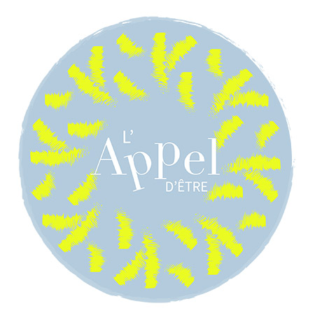

Le magazine l'Appel d'Être
Le contexte
L'Appel d'Être est un magazine en ligne paru en 2022. Il est le fruit du collectif Les Œuvres Vives, composé de trois esprits créatifs :
- Cyril Leclerc, directeur de la publication et des partenariats, rédacteur et commanditaire du projet ;
- Lucie Seyller, à l'origine de la direction visuelle et du design du site ;
- Laura Haas, conseillère technique et webdesigner, responsable de la conception et de la maintenance du site Internet.
Lien vers le site : https://lappel-detre-magazine.com
Objectif(s) principal(aux)
Prioriser WordPress afin de faciliter les mises à jour de contenu par l'équipe de rédaction, destinée à s'agrandir, tout en réduisant les coûts de maintenance (le magazine préparant son autonome financière). Et néamoins respecter les valeurs fondamentales du projet, en réalisant un site durable et en minimisant son empreinte carbone.
Mes contributions au projet
- Accompagnement dans le choix de la solution technique (sélection du thème et des extensions) ;
- Installation et configuration des extensions ;
- Comparaison des services d'hébergement et recommandation de l'entreprise Infomaniak en raison de son engagement en faveur du développement durable ;
- Conseils sur la conformité au RGPD dès la phase de construction du projet (principe du privacy by design), entraînant l'intégration des solutions Matomo et Liiibre ;
- Construction du site à partir des maquettes générales réalisées par la graphiste ; Échanges réguliers avec le commanditaire et/ou la graphiste, en distanciel, afin de trouver des solutions respectueuses du projet, tant sur le plan du sens que du contenu, et du budget ;
- Optimisation du référencement par le biais des balises, des mots clés, des extensions WordPress et de l'inscription sur la Google Console ;
- Mise en ligne du site sur le serveur et enfin, maintenance de l'hébergement et de la solution WordPress.
Résultats obtenus
- Mis en ligne début 2022, le site a enregistré 10,3K impressions sur Google ;
- Le premier contenu se charge en 1.5s d'après GT Metrix, 0.6s sur Ordinateur et 2s du Smartphone d'après PageSpeed Insights.
- 422 visiteurs ont découvert les articles mettant en avant la vie, avec 1026 pages vues (780 vues uniques) ;
- Le commanditaire maîtrise bien son site Internet et a publié une vingtaine d'articles depuis la mise en ligne du site ;
- Le commanditaire a été sollicité pour d'autres projets, ce qui a pour le moment ralenti le développement du magazine en 2023.